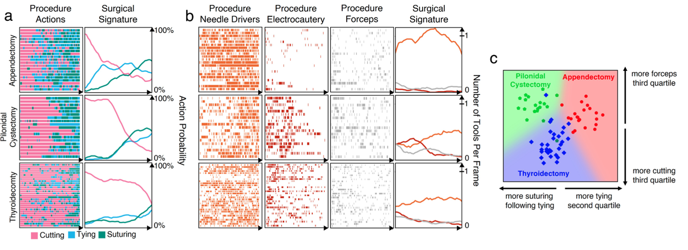
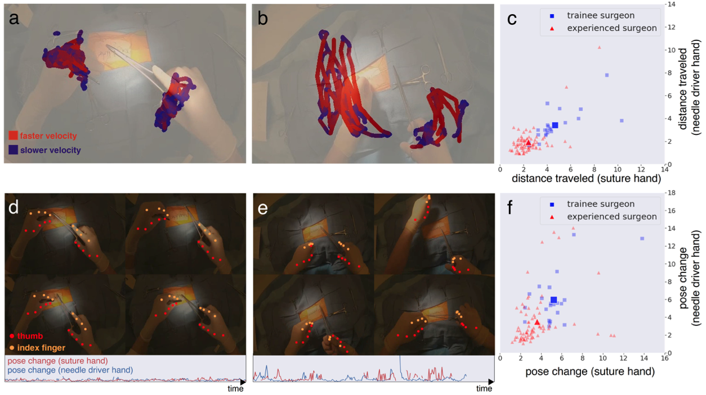

Method

Open procedures represent the dominant form of surgery worldwide. Artificial intelligence (AI) has the potential to optimize surgical practice and improve patient outcomes, but efforts have focused primarily on minimally invasive techniques. Our work overcomes existing data limitations for training AI models by curating, from YouTube, the largest dataset of open surgical videos to date: 1997 videos from 23 surgical procedures uploaded from 50 countries. Using this dataset, we developed a multi-task AI model capable of real-time understanding of surgical behaviors, hands, and tools - the building blocks of procedural flow and surgeon skill. We show that our model generalizes across diverse surgery types and environments. Illustrating this generalizability, we directly applied our YouTube-trained model to analyze open surgeries prospectively collected at an academic medical center and identified kinematic descriptors of surgical skill related to efficiency of hand motion. Our Annotated Videos of Open Surgery (AVOS) dataset and trained model will be made available for further development of surgical AI.


@article{goodman2022surgery,
title = {Analyzing Surgical Technique in Diverse Open-Surgical Videos with Multi-Task Machine Learning},
author = {Goodman, Emmett D. and Patel, Krishna K. and Zhang, Yilun and Locke, William and Kennedy, Chris J. and Mehrotra, Rohan and Ren, Stephen and Guan, Melody Y. and Zohar, Orr and Downing, Maren and Chen, Hao Wei and Clark, Jevin Z. and Brat, Gabriel A. and Yeung, Serena},
journal = {JAMA Surgery},
issn = {2168-6254},
month = dec,
year = {2023}
}